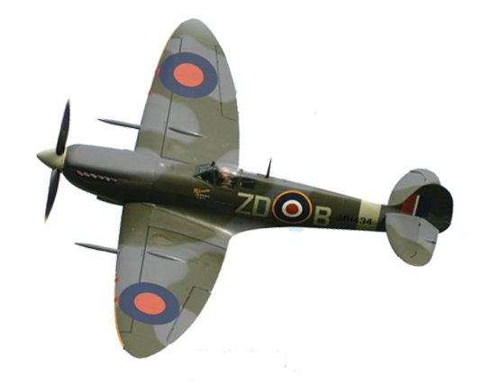

The Supermarine Spitfire is a British single-seat fighter aircraft that was used by the Royal Air Force and many other Allied countries before, during and after World War II. The Spitfire was built in many variants, using several wing configurations, and was produced in greater numbers than any other British aircraft. It was also the only British fighter to be in continuous production throughout the war. The Spitfire continues to be popular among enthusiasts; about 54 remain airworthy, while many more are static exhibits in aviation museums throughout the world.
